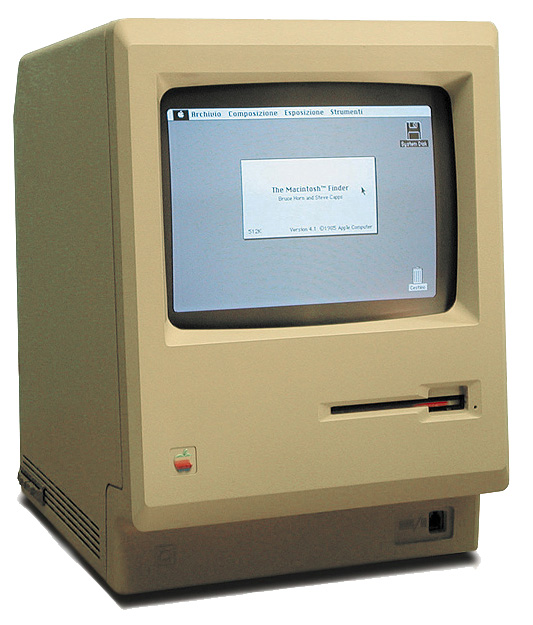
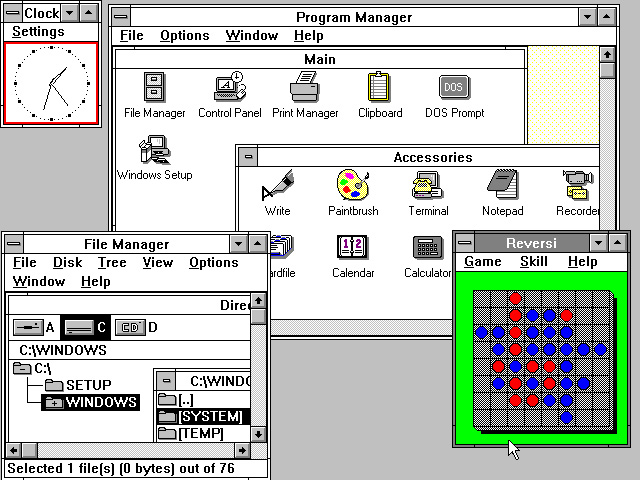
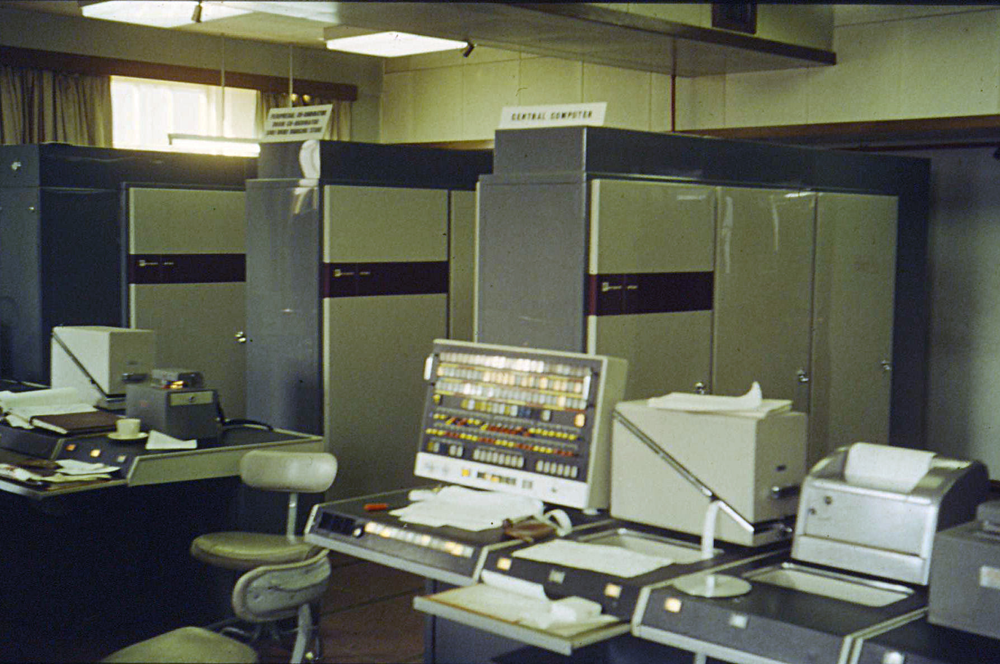

Компютърът на Атанасов-Бери...
(на английски: Atanasoff-Berry Computer, съкратено ABC) е първият модел на електронен цифров компютър с регенеративна памет.
Създаден е като университетски проект на новаторска сметачна машина в периода от 1939 до 1942 г. от Джон Атанасов и Клифърд Бери.
Макар че АВС все още не е днешният универсален компютър със запаметена програма, в него са реализирани някои принципни решения, валидни и днес.
Машината е проектирана и създадена по време на работата на Джон Атанасов като преподавател в катедрата по физика на Щатския колеж в Айова (на английски: Iowa State College, ISC).
Целта е да се решават системи с до 29 линейни уравнения с 29 неизвестни по модифициран метод на Гаус, но проектът е прекъснат поради войната на стадий, на който машината е решавала системи уравнения с 3 до 5 неизвестни.
След това е демонтирана и забравена. Получава широка известност в края на 1960-те по повод на патентния спор за ENIAC, когато АВС е цитиран като предходна реализация на някои от идеите, залегнали в ENIAC.
В края на 1990-те е направена реплика на компютъра на Атанасов-Бери, изложена в Центъра за изчислителна техника и комуникации Дърам в Университета на Айова.

ENIAC (на английски: Electronic Numerical Integrator and Computer)...
е първата електронна цифрова електронноизчислителна машина (компютър),
която може да се препрограмира (но все още не съхранява програмата си в паметта,
т.е. не е компютър със запаметена програма) и може да реши голям брой разнообразни изчислителни задачи.
Построена е в САЩ по време на Втората световна война с първоначална цел да изчислява балистични таблици за нуждите на американската армия.
Конструиран е през 1945 г. от американците Джон Мокли и Дж. Преспър Екърт.

Компютър "Mark 1" - първият американски програмируем компютър....
През 1936 г. американският физик Хауърд Айкен, бъдещият производител на компютъра "Марк 1",
започва да изгражда планове за автоматизирано изчислително устройство.
Промяната настъпва, когато той учи за дисертация.
Темата на дисертацията беше космическа такса.
Скоро дисертационната му работа се състои главно от решаване на нелинейни (диференциални) уравнения.
Единствените методи за числено решаване на проблемите са разработването на електромагнитни настолни калкулатори.

IBM PC е първият персонален компютър на IBM...
От неговото название по-късно PC става синоним на всички настолни компютри в света.
IBM PC е разработен в Бока Ратон (Флорида) под ръководството на Дон Естридж. Това е революционен компютър и по
отношение на съставните си части, които могат да бъдат закупени и от външни дистрибутори.
Първата машина е демонстрирана на 12 август 1981 г., а масовото производство започва шест месеца по-късно.
Още през първия месец на масовото производство търсенето е огромно и се разпродават над 200 хил. компютъра,
което количество първоначално производителите са прогнозирали за период от 3 години.

През април на 1985 г. ИТ индустрията посреща първия в света лаптоп за масова употреба....
Toshiba лансира модела T1100, който ни припомня със скромния си хардуерен
пакет през колко сериозно развитие са прехвърчали технологиите от тогава до днес...
Toshiba T1100 не е бил оборудван с Intel Core процесор и гигабайти RAM, а е разполагал с процесор Intel 80C88 с тактова честота 4.77 MHz
и е бил с 256 KB памет, а вместо Blu-ray гнездо е имал слот за 3.5-инчови дискети и е вървял под операционната система DOS 2.11.
Дисплеят е бил монохромен LCD с резолюция 640х200 пиксела, батерията е издържата до 8 часа, а теглото на Т1100 е било около 4.1 килограма.

Macintosh или Mac е серия от няколко производствени линии персонални компютри, създадени, поддържани и продавани от Apple Inc....
Първият Macintosh е пуснат в продажба на 24 януари 1984 г. Той се превръща в първия успешен личен компютър на пазара,
който използва графичен потребителски интерфейс и мишка, вместо използвания дотогава стандартен интерфейс с команден ред.
Компанията продължава да постига успехи през втората половина на 1980-те, но през 1990-те г. пазара на персонални компютри
започва да се измества към персоналните компютри съвместими с IBM PC, които работят под MS-DOS и Microsoft Windows.
Текущата сфера на компютрите Макинтош обхваща нива от Макинтош мини десктоп (Mac mini desktop), до сървърите Xserve.
Компютрите Макинтош са насочени главно към масовия потребител в домашни условия, както към образователната сфера и други.
Едва напоследък сървърът на Макинтош Xserve G5 позволи до голяма степен приобщаването на компанията и вписването и към общите пазари.

Windows 3.0 е издаден през май 1990 г....
като своеобразно продължение на първите две версии на операционната система на Microsoft - Windows 1.0 и Windows 2.0,
като предлага на потребителя по-удобенграфичен интерфейс и повече възможности.
Със способността си да адресира повече от 640К памет и много по-мощният интерфейс,
производителите на софтуер започват да правят различни приложения за Windows 3.0,
което до голяма степен помага на Microsoft да продадат над 10 милиона копия, което го прави бестселър с графична среда.

❮
❯
Суперкомпютър се нарича компютър, който за момента на създаването си притежава най-високите показатели на капацитет на
обработка на данни и в частност, скорост на изчисленията...
Историята на суперкомпютрите започва през 1960 година с компютъра „Атлас“ в Манчестърския университет и серия от
компютри в „Control Data Corporation“ (CDC), проектирана от Сиймур Крей.
Те използват иновативен дизайн и паралелизъм за постигане на върхова на изчислителна производителност.
„Атлас“ е съвместен проект на „Феранти“ и Манчестърския университет и е проектиран да работи при скорост на обработка,
приближаваща една микросекунда на инструкция или около един милион инструкции в секунда. Изграждането на първия „Атлас“
започва официално на 7 декември 1962 година като един от първите суперкомпютри в света – смятан и за най-мощния компютър
в света по това време със значителна преднина и за еквивалент на четири „IBM 7094s“.
При „CDC 6600“, проектиран от Крей и завършен през 1964 г., използваните дотогава германиеви транзистори са заменени със силициеви,
тъй като те работят по-бързо, а проблемът с прегряването им е решен чрез използване на принудително охлаждане, което прави „CDC 6600“ най-бързия компютър в света.